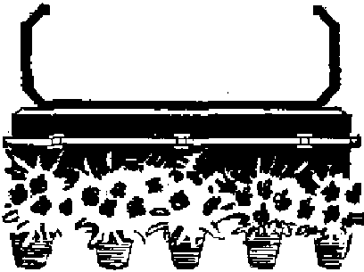
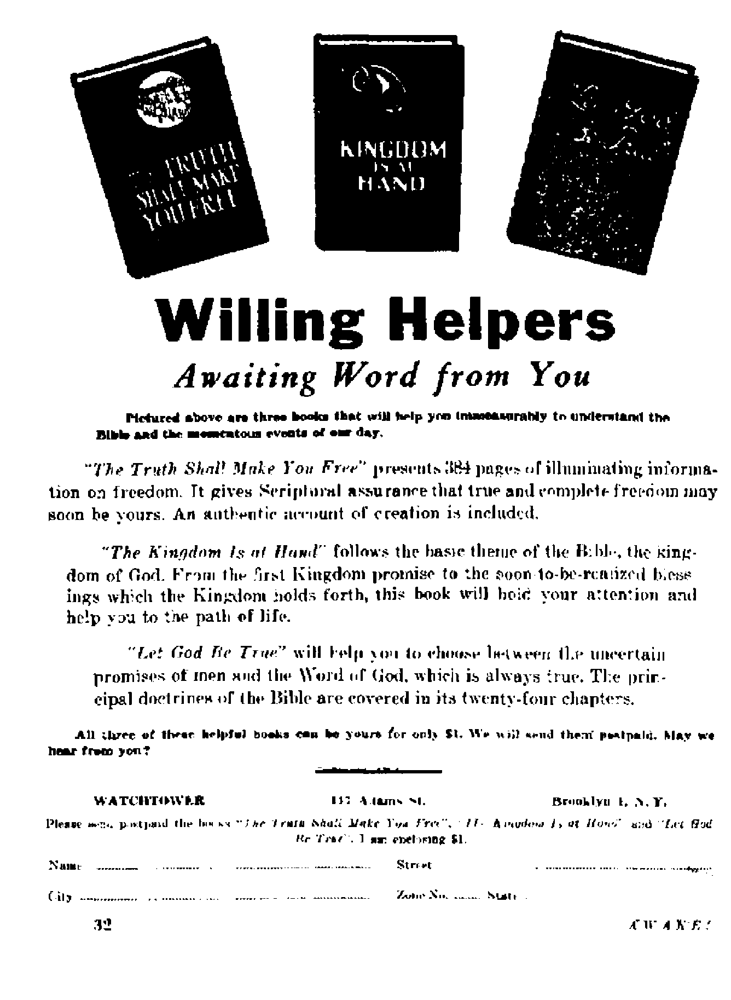

Extent and purpose of Catholic Action in labor
How death came to freedom in this Ohio town
Meer some of the leading citizens of geyserland
THE MISSION OF THIS JOURNAL
Newt scurcw that are aH* to keep you awuk# to flies vital u^ues 0/ our tones murt he unlettered by censorship and selfish inierevto. “Awake!” has no fetters. It reoogntzes facts, fncses facto, is free to publtoh facto. It to not bound by political ambitions or obligations; it Is unham^red by adverttocrs whew toes must not be trodden on; it is unprejudiced by traditional creeds. This journal keeps itself free that it may speak freely to you. But It does not abuse its freedom. It maintains integrity to truth.
«Awake !” ums the regular news channels, but is not dependent on them. Ito own correspondents are on all continents, in scores of nations. From the four corners of the earth their uncenBcred, on* ths* scenes reports come to you through these columns. This journal's viewpoint Is not narrow, but to intorna-tionaj. It is read in many nations, £n many languages, by persons of all age®. Through its pages many fields of knowledge pass In review—government, commerce, religion, history, geography, science, social conditions, natural wonders—whyt its cover* age is aS brood as the earth and as high as ths heavens.
Awake!” pledges itoclf to righteous principles, to exposing hidden foes and subtle dangers, to championing freedom for all, to comforting mcum^rs and strengthening those dtoneortoned by the failures of a delinrttiant world, reflecting sure hope for the establishment of a right* eous New World.
Get acquainted with “Awake!” Keep awoke by reading “Awake!”
PvBbtvnBD aeitimjHTTr^v WATCMTOfFER B1BLB AND TJUCT flOTJIKTY, 1NU, 1X7 Adams Httacf fcruuiilj'ii 1( N> F., U. 8. A.
N. H. KNOHB. /"reHiteiU Ghaut Sr iter, Kterftntw
Flv* oenti < copy Orift dollar a ywr
B«*htMMC dtwM Be Mt 4* rtllof la iw "*>■■ •( aridnu >t>fn »enl OJr SBa ttip b«
Uj In eMDitfonn aliUi WfwlitjOH to (WMM eipetttd MtJtln Rlllin u** oxxrUi, fferi 5»r* JcIItbtt of ™<ny. BwltUnm *ri uetpled «t *■ w*H v tew iddresc, BrooUjo fron tsoniric, ata, *> UBce h i««icd, Mom Yrjjly Rabsati^lan Rile
hf fhtmuUcnil iwtw OdT- fiiite"Tipii»u Afatriat, B.S., IK Adiw brrtkln 1, N.Y. |L Ht#a Id iUmnn cwntrla m btn it*Mi 1° l°«J Morally 1] BemTord ft J,. HritiilfclJ, N.B.W. jn. i^iKiicr. C*mAl |G Irwift An., TonNUo 5, ontirto *1
■Hilt »C M^lralta (rlLh nswn If smt ftftaiA IfHidvn, Z fij.
it ^tst tn OMr tefoi MBcripJcw JaaM Bwtw Ajof. c*pr Kxb .t«
Btitwtd u HAd-ilw HiUtr at BnwAlyn, N. Y„ < lUnft. 3, IS if’ ntBtal Ju U.S. A.
CONTENTS
Itoligitm and the Worfcmsinai]
The Catholk Church as Employer
Hsnff the BZack Gr^pf? nrt Wooster
Events Leading Up to the Murders
Private Pdice provide Proieotioa
Kleptomaniacs Professional Shoplifters
Variety in Dvtsi^u and Composition
Secret of Vitality Within the Bones
Geysers
Colombia’s Distinguished Visitor
"Thy Word Ts Truth”
®^Now it is high time to awake.— Romans 13:119?
Volume XXXI Brooklyn, N. Y., May 8, 1950 (Humber 8
RELIGION AND THE WORKINGMAN
Extent, Purpose and Effect of Catholic Action In Labor
RELIGION and labor. There was a time when these would have been considered strange hed fellows. Particularly was this true of the last two decades of the nineteenth, century, which saw the meteoric rise of the Knights of Labor organization, only to be superceded by the American Federation of Labor. And, doubtless, that is what T. V. Powderly, for thirteen years the colorful president of the Knights, would have thought; for his lengthy autobiography The, Path I Trod contains an extensive and bitter indictment of “Ecclesiastical Opposition”. Incidentally, Powderly was a devout Catholic with socialistic ideals.
Today, however, there is the closest cooperation between religion and labor. Indicative of this are the remarks made by Jack Kroll, director of the Political Action Committee (FAC) of the CIO, at the annual conference of the Religion and Labor Foundation. According to him no two interests of the nation are more happily joined in a single foundation than religion and labor. “Between uS there ought to be complete harmony,” he said, “for we are both devoted to the ideal of human welfare.” He further stated, “It is written that ‘the laborer is worthy of his hire’. It is also written that you ‘shall not muzzle the ox that treadeth out the grain’. Now these two texts declare the 'whole philosophy of just and harmonious labor relations. They declare & great policy, in which labor and religion can join without reservation.”
While the Protestant clergymen and church groups are often urged to take an increasing interest in the welfare of labor, their activity does not begin to compare with the labor activity of the Roman Catholic Church. As the basis for such activity Catholics point with pride to the expressions of their leaders. Two of the predecessors of the present pope, Leo XIII and Pius XI, have issued encyclicals on the subject, which have been termed the “Magna Chartas of Labor”. Regarding the present pope we continually note such headlines in the papers as “Pope Hails Workingman— Says Catholic Church Seeks to Improve Labor Conditions”, and “Pope Holds Unions Needed in Economy That Has Defects”, while Cardinal Spellman “Cites Dignity of Labor”.
Then there is the Catholic Defense League, which gives free advice on labor legislation to trade unions, handles cases of discrimination and arrest for labor activities, etc.; and the National Catholic Welfare Conference, whose social action department has an especially effective publicity bureau which makes known the labor views of the more liberal elements of the Catholic Church,
Catholic Labor Schools
The Catholic Church also organizes labor schools, the first being the Xavier Labor School of New York city, founded in 1935. Today there are more than a hundred such . schools, located in every
industrial city of the United States. Twenty-four of these are directed by Jesuits, thirty-two by diocesan anthocities and the remainder by various other Catholic bodies. At such schools workingmen arc taught both the theory and the tactics of labor umonitm. Each year some 7,500 workingmen graduate from these schools.
The power of Catholic Action in Johor, however, is primarily felt through its own labor union, the Association of Catholic Trade Unionists (ACTU). This union, firwt organized early in J 937, from the beginning has had the “spiritual* direction of the Catholic clergy, and the backing of the Jesuits of Fordham University and Cardinal Spellman. Regard, ing the motives of its founders, we quote; “They had seen how good and how necessary is the instrument of trade unionism, and how badly it is in need of trained [Catholic] leaders” and/'how, in the absence of such leadership, racketeers. Communists, and other undesirables can work, fight and bludgeon iheir way into control of American unions’’.
This union, the ACTU, has locals in every industrial city, although it doe* not reveal thu actual extent of its mom hership. In its recent convention it condemned the Taft Hartley labor law, called for labor unity, higher minimum etc. It is especially active in De troit (as also are the Catholic labor schools), where it claims to have been the deciding far tor in electing Walter F. Reuther as president of the United Auto Workers union (UAW’). While Protestants may enroll in the Catholic labor schools, the ACTU is strictly limited to Catholics.
Working together with the Catholic labor schools and the ACTU are the Catholic labor papers. Among these are the Catholic Worker of New York city, which competes with the communist Daily Workert and which advocates, according to one of its editorials, "worker ownership of the means of production and distribution . . . and the elimination of a distinct employer class;' Others include the Labor Leader, also of New York city, and the Wage Earner, especially effective organ of the Detroit, Michigan, ACTU. Those papers in general adviMiate labor unity; speak out against labor racketeering, and especially against communism.
The most prominent place in the Catholic labor movement is occupied by its clergy. There are labor archbishops, labor monsignors, labor bishops and labor priests. The latter have particular!v attracted much attention and have been featured in sntdi magazines as Foriune and Look, From the description of the more prominent lahar priests in Fortune, we quote:
Father Philip A. Carey rung a busy labor Reboot, niiphuHizcH tactics and philosophy. Father Rico attends conventions, advises unionists, joins pickets. Father Smith lectures unci writes; he is the author of Spotlight on Zrdbor Unions. FatheT Cliinry, Dvl-ruit ACTU cho plain, ... is known as the "organizing priisd” . . . One of the moat active labor priests is Father George Higgins. afflistant director of the social-action department of die National Catholic Welfare Conference. In that capacity he is in close touch both with priests all over the country and with top officials of national labor bodies.
Concerning the activity of labor priests a spokesman for Catholic Action in labor, V. Riesel, writes in Look: “The priests say their work ie based on papal encyclicals. No one can force them out of the labor movement now—not the suspicious labor leaders, or the Catholic conservatives, or the Communists, The labor priests are here to stay/1
With all this increased activity by the Catholic Church in the labor movement has come, as noted above, a suspicion on the part of some labor leaders. Labor priest Rice, writing in V. Riesel’s syn-
dicated labor column, devoted the entire article to a bid for the confidence and trust of the liberals in U.S. labor who have a “fundamental mistrust” of Catholic participation in labor. He lauded the activity of the ACTU, complained of the “liberal mistrust that is mountainous”, and closed with a plea for “a little more liberalism from the liberals, please!”
In discussing the activity of the lahor priests Fortune also reports that liberals in labor distrust the ACTU and that they consider it as a pressure group. In telling of the resignation of Kermit Eby, a Protestant, as director of the Education and Research department of the CIO, it quotes him as saying: “There are two extreme poles of power attraction in the CIO, the Communist pole and the ACTU pole. Both receive their impetus and inspiration from without the CIO. Both believe the control of the CIO is part of the larger struggle for the control of the world.” In similar vein is the indictment of the Catholic lahor activity by James M. Freeman, in his pamphlet Ao Friend of Labor,
What are the facts? Why are labor liberals so suspicious of the role the Catholic Church plays in the labor movement? Is the welfare of the workingman the sole motive of that religious organization ? or must the indictment of Mr. Eby, that it is merely a part of a greater struggle to rule the world, stand ?
The Catholic Church as Employer
The extent of the interest of the Catholic Church in the welfare of the workingman may be ascertained by noting the way she treats those in her employ. When the cemetery workers of the Catholic “Calvary” and “Gate of Heaven” cemeteries struck for higher pay and a shorter week, Cardinal Spellman ordered seminary students to dig the graves, and he himself led the strikebreaking tactics, at the same time drawing across the trail the red herring of communism.
Another Catholic dignitary, Bishop MeVinney, of Providence, Rhode Island, blasted a union because of its slow-down tactics by which the union hoped to gain its demands. Why? Because it was working on a Catholic building project. The bishop further complained that bricklayers today are only laying 400 bricks a day, whereas years ago they laid from 1,000 to 1,500 a day.
UurthftrmOTe, it is a notoricfiis fate that no class of workers, from janitors to college professors, is as poorly paid as those employed by Catholic institutions, such as parochial schools, etc. Is not here a place for “charity to begin at home”!
Further Inconsistencies
Too, the Catholic Church claims that she must inject her religion into the labor movement to counteract the influence of labor racketeers. Yet when the rank and file of the International Longshoremen’s Association recently rebelled against one of the most notorious labor racketeers, Joe Ryan, she used her influence to break the strike, labeling those leading it as communist, thus causing the men to submit to continued unjust conditions. Is that the way to help labor clean house and improve its lot?
Again, one of the chief tenets of the Catholic labor movement, as enunciated hy the popes, is that strikes should not be violeut, that property is to be held inviolate, tec. But the past year witnessed a strike by a Catholic nnion in Quebec which was marked by, to quote the Toronto Financial Post, “appalling violence,” and which was “one of the worst demonstrations of lawlessness this country [Canada] has ever seen”. Regarding this strike of the asbestos workers employed by the (Protestant) Johns-Manville Co., the report of the Weekly People states: “A word from the chaplain of the Catholic Syndicate, Father Phillipe Camirand, ended the violence for the time being, but not until many policemen were beaten and disarmed.
Indeed, some of the policemen, while prisoners of the strikers, were beaten m the presence of Father Camirand. The priest refused to intercede on behalf of the police, and later proclaimed that the strikers were 'fighting for the doctrines of the Boman Catholic Church’J*
Another fact which strongly impugns the sincerity of the claims regnrding the motive of the Catholic Church in the labor movement is the factor of the date of its activity. Pope Tien XIII issued his- encyclical on labor, Rerum Novarum, in 1891. Concerning this a Jesuit, R. J. Henle, writing in Commonweal (a Jesuit publication), states: ‘There is no use imagining where we would be had we taken seriously the encyclicals of the great Leo in hi a own day instead of in the fortieth year after.”
Ib it not a significant fact that all this activity on the part of the Catholic labor schools, the ACTU, the Catholic tabor press, the Catholic labor clergy, priests, bishops, etc., did not begin then, nor even before, when the need was greatest ? that it waited until the ora of the New Deal, under the favorable conditions of the Wagner Labor Act, ami coincides with the extensive organising of labor by the CIO? When the labor movement showed the greatest activity and expansion, when it constituted a power Io be reckoned with, then, suddenly; the Catholic Church heroines interested in the labor movement. And especially ha$ she rhosen to interest herself in the CIO because of its vitality and radical leadership.
There was a time when Michael Quill, head of the powerful New York Transit Worke rs Union, dared to criticize the Catholic participation in labor, though he himself is a Catholic. In a speech in Boston he referred to the New York Catholic tabor school movement as a ‘"hindrance, a nuisance and a strikebreaking outfit”. But iso effective were the attjutks of the Catholic press and Catholic Action right in his own union that before a year had rolled around ho completely submitted to its influence and Complied with its demands regarding political issues, etc.
Then /here was a time when J&mes B, Carey, likewise a Roman Catholic and now secretary-treasurer of the CTO, ulso objected to this dictation. It seems that he had addressed a liberal group which Catholic spokesmen saw fit tn label communist. The ACTU sent a letter to Carey regarding tfje incident, to which iic replied:
I have received raaiiy pressure letters of this type. I am surprised, however, to find how riowl y you follow the same pattern . . . I seriously object to the labor movemenVs being used as a battleground for or against certain political philosophies^ I am, therefore, very much opposed to any liirialiun. from any sources outside the labor movement in regards to the iiolicics of the labor movement.
But the pressure was too great—after all, thia was Catholic pressure, and Carey was a Catholic, So, before long, we find him writing the ACTU for a list of I he group? to which they objected.
The president of the CIO, Philip Murray, at one of its conventions n<it, so very long ago, hod it go on record that "we ask no nian his national origin, his color, hie religion or his belief* , „ , This union will not tolerate effort? of outsiders—individuals, organizations or groups—whether they he communist, socialist or any other group, to infiltrate, dictate or meddle in our affairs . . . We engage in no purges, no witch hunts”. But, after Catholic pressure was brought to bear because of this “drivel”, at the very next gathering of the CIO it went on record that organized labor "wants no damned communists meddling in out affairs”; and the resolution passed objected only lo outside political groups meddling, th ns leaving the door wide open for the ACTU to “infiltrate, dictate and meddle” in the affairs of the CIO.
Submit or Get Out/
While the CIO in general has yielded to Catholic pressure, there was or is a left-wing faction in that organization over which it has been unable to wield any influence. This faction was led by the UE (United Electrical Workers union), the third largest Affiliate of the CIO, It had ousted J. B. Carey from its presidency in 1941, arid the fight for its control has continued ever since. Typical of the tactics used and the forces involved was the fight at Erie, Pennsylvania/for control of the UE there. Just before the union held its election, the local labor priest gave the fight front-page publicity in the parochial press, stating that the issue was the same as that which confronted Italy a year ago, and then added: “What is most perplexing is the fact that there are many Catholics working at the General Electric who say publicly that priests have no business interfering irk of Uw xxvavp?'L CfclW-
lics are either bad Catholics or just stupid !” However, whether “bad” Catholics or just “stupid”, they rejected such interference by a vote of three to one.
The fight between the left-wing unions (communist controlled, maybe, or merely not subject to Catholic pressure) and the right-wing (submitting to Catholic pressure) executive body came to a head at the 1949 convention at Cleveland, Ohio, late in 1949. There the executive committee, while ignoring charges of union violations such as crossing picket lines, racial discrimination,. anti-Semitism, etc., charged the left-wing unions with communism and had the convention pass a resolution to oust communists. Any who would not go along with the executive committee in its support of those policies of the Truman administration which had the support of the' Catholic Church, specifically the cold war against Russia, with its Marshall Plan, Atlantic Pact, etc., were communists.
along with the administration on such jV-IY 8, 1950
measures as public education and health insurance, as the Catholic Church opposed these—for reasons best known to herself!)
Regarding the plans for the convention, the New York Times (Nov. 6) stated: “They [the left-wingers] were to be accused of every crime in the book?* Immediately after the keynote speech by President Murray, in which he announced his purpose to clear out the leftwing element, a Roman Catholic bishop, Edward F. Hoban, gave an address in which he instructed the delegates: “You must repudiate those enemies of God and man who seek to pervert your efforts and to enlist your great forces to fight on the side of evil.”
While the CIO gave lip-service to the fundamentals of labor union democracy at the convention, it repeatedly winked at violations of such. Thus it has completely reversed itself as to what should W pfcraTnvuifi lntere^ and importance in the labor movement and, with the consent of Murray and Carey and at the instance of the ACTU, it is now “being used as a battleground for and against certain political philosophies”. Or, rather, it would be better to say “religious” philosophies, as the Detroit Free Press states that “we cannot help wondering just how broad a line separates the CIO 'right' from its 'left' ”
What Next?
All twelve left-wing unions were scheduled for expulsion, aggregating a total of about 900,000 members of a claimed six million (some hold only four million). It was thought best, however, to limit the expulsions at the time to two, the UE and the FE (Farm Equipment), because of the size of the fight that the CIO would have on its hands as the result of such expulsions. In January 1950 the CIO ousted the California state council CIO on similar charges of cbm-TnuinsY BympnUiy and ftouting union policy.. And, although the right to act as
bargaining agent for the electrical work' ers was still in doubt, in March three more unions were expelled.
It is the purpose of the CIO to win back as many as possible of that 900,000 by the formation of rival unions and by the raiding tactics of “right” unions. To that end a rival electrical union was formed, headed hy Carey. As noted by the New York Times, “The immediate prospect . . , is for a period of con-fusion and intra-union battling.” And while there will be many battles with union ballots and before the courts, they will not he limited to such: Already there have been smashed windows and broken heads. (In fact, one left-wing delegate attending tho convention has been bealen up and had an eye blinded by right-wing raiders.) And it will also invade the Catholic churches, ns noted by a radio report of a priest who instructed lux parishioners to leave the UE and join tht new' rival union.
From the foregoing it is quite clem* that Catholic Action on the U.S. labor front has boded no good for labor unions. Her treatment of her own employer,s, her inconsistent practices, and her pressure tactics, all show that she has an nx to grind, and that her motive is not to help the labor movement but to control it for her own ends. As a result of her meddling, dictating, infill r ating and interference, the CIO, most vital force on the American labor scene, has been emasculated, and the efforts of-labor organizers, instead of being directed to “organize the unorganized”, arc being diverted to raiding tactics; labor is fighting labor so as to fight her cold war instead of the common enemy of labor, the oppressing classes.
Today the labor unionist finds little ground for optimism or comfort on the American labor scene. Catholic Action has let the AFL go its way, ns it considers that body politically “safe”, although, as a force, rather stagnant. It has succeeded in causing the CIO unions to engage in internecine warfare. Within the CIO Catholic Murray eyes with distrust Protestant and socialistic Reuther; while even in the new electrical union Carev had to fight one Kelley for control» To the one extreme is Catholic Action with its “right” political philosophy and its rule-or-ruin policy, and at the other extreme are the communists, advocating something worse (if possible), or, at best, liberals who engage in the wishful thinking that totalitarian Russia is amenable to appeals to reason and for justice.
And everywhere are tho racketeering labor bosses. The voting of themselves in for life prestdenries at enormous salaries is neither democratic nor conducive to honesty and the best interests of the unions. And jurisdictional disputes and the raiding of other unions hip ladies that not only arc unfair to the employer but that make the principle of solidarity among labor seem a mockery. All of which goes to underscore the wisdom of <1 prophet of Cod who Jong ago wrote: Put no trust in princes, in a mere man, in whom is no help?’—Psalm 146:3, An Amer. Trans.
But let all lovers of righteousness, in and outside of organized labor, take hope. Bible prophecy shows that it will not be long now before Oue, who was once a carpenter but who is now ruling as '"King of kings and Lord of lords”, will ^judge the poor of the people . ■ . and save the children of the needy’. He will break in pieces the oppressor (be the oppressor a totalitarian dictator, a religious pressure group, or- a racketeering labor boss). Under His just rule men “shall build houses, and inhabit them; and they shall plant vineyards, and eat the fruit of them. They shall not build, and another inhabit, they shall not plant, and another eat . . . Mine elect shall long enjoy (he wort of their hands”.—Xsdrifl/j 65:21,22.
How mobs struck down Freedom In this Ohio town
Murder by dem o n i z e d mob-
time: during “brotherhood” week
in February, 1950. The place,: in the open streets of the religious, Presbyterian-college town of Wooster, Ohio* Let the dis- ~ graced, egg-splattered American _ flag fly at half-mast in memory of this frightful crime! Let all America mourn this vile deed. Let the good- people of Ohio weep for Wooster. Let the citizens of that tfould-be pious town hang their heads, in shame. Let the fascist-minded, flag-saluting mobsters, who dragged that proud emblem of freedom through Wooster's egg-smeared streets, now be put on trial for having assaulted and killed the very principles of freedom for which the flag stands!
This outrageous attack and impalement of freedom occurred during a three-day circuit assembly of more than 800 Christians known as Jehovah's witnesses. On Friday and Saturday the assembly held their sessions of worship inside the fortresslike Wayne Theater, while threatening mobs milled around on the outside. However, the Sunday program for February 26, scheduled to be held in the high school auditorium, was canceled after lawless mobrule overpowered the constitutional authorities, But lot the one in charge of that Christian assembly* Mr* L, E. Reusch, a traveling representative of thfi Watchtower Bible Society, give his eyewitness ac-
Pftwooivl OF *• WORSHIP
WOOSTER
& count of that wicked
. outburst of violence.
From his vivid report the following is taken.
For eleven hours mobs ruled the city of Wooster. From 4:00 o'clock Saturday afternoon until 3: 00 Sunday morning the police were powerless, A pitifully inadequate police force was finally supplemented by volunteers of the National Guard in an attempt to maintain order, but to no avail. We were inside the fortlike Wayne Theater, safe, warm and comfortable, enjoying our1 circuit activity meeting, from 7 until 9 p.m., Saturday. Outside the mob raged and howled, venting their spleen on the few police and guardsmen who formed a cordon outside the main entrance. The police chief was the main target of attack, and he was literally plastered from head to foot with eggs,
Estimates vary on the number in the mob, but from 9:00 on it grew in numbers until midnight, when the chief estimated there were 1,100, The chief was all for dismissing us immediately out the rear doors, but that was not deemed a wise thing to do and we told him that we were going to stay put until order could be maintained, oven if we had to sit it out all night. The audience was calm, unexcited, and settled down to making the most of the situation. The time was occupied to good advantage as brethren related ex
periences and sang their Kingdom songs. So manifest was the operation of the Lord's spirit in this situation that the chief of police later . commented to me about it. In all his life he had never witnessed anything to compare to it. He was in the army for
seventeen years and in police wnrk all Ms life, yet had never seen a more disciplined group of people.
While the impromptu program progressed we organized squads quickly and quietly to hold the entrance ways. The women and children ware moved out of the immediate danger areas. The men, with coats mid ties removed and sleeves rolled up, calmly took up strategic positions. The chief said: ‘‘It’s a good thing the mob couldn’t get in'; they’d of never gotten out!” He would have dearly luved to deputize our bays for his own forces, had. I said the word, hut that was not our job. We chose to ait tight and hold the fort, and for this course the chief later expressed real adniira* tlon for our calmness, dignity and remarkable self-restraint under the circumstances.
Meanwhile, the situation in the cafeteria was more serious, We had rented an upstaire hail just half a block awsj* frozzi the theater, and we were tied in by direct wire as well as by the usual telephone connections. What concerned us was the fact that only seven of our men together with thirty women were in the cafeteria. You can imagainc the thrill we got when at th a main auditorium we received from them the telephone request.* “Sing nong# Nos, 38 and 60; we are holding the fort here !'*
That little handful nt the cafeteria, men and women alike, ^quitted themselves valiantly as they literally fought for their lives, unassisted by the police. Fully 150 temporarily insane mobsters (surged around the doorway trying to force their way in. Up the narrow stairway they backed our men, but that is as far as they got. There the line held. After a half-hour of unsucce^ful attacking, Johnny, the leader (John Thomasetti), called off his gang, “Wait a minute/’ he said, “there’s something wrong here. There are only half a dozen of them and a hundred of us, ard we can’t get in. There’s something wrong."
About that time, occprding to the police chiefs story, he and some of his men arrived nt the cafeteria, “What’s going ou here, Johnny?” asked the chief. “We’recalling a retreat/’ said Johnny, “they’re too much for us, and 1 want that man arrested; he hit me with this.” He held out a five-inch piece of pipe. The chief looked at it disdainfully and remarked that it wasn’t so much. To which Johnny replied: “R—, that's what broke off!”
By 1; 45 a.m. I took a reconnoitering tour around with the chief and decided the mob was now small enough and cold enough (it was down to 6 degrees above zero Fahrenheit) that we could leave the building with the minimum of trouble. So. while the chief and his men bottled up about 100 of the mob in the Greyhound bus depot next door, whore they had taken refuge from the cold, some of our men diverted 1he attention of the rest at the iwn entrance with the fire hose. Washing down llie egg-soaked sidewalk made it Appear that wo were preparing to eojjie out. Meantime, the assembly was quietly making iis; exit unobserved out the rear doors. The mu-neiiver was h pen-reel success, the enemy was completely fooled, no one was hurt, and the chief expressed real admiration for the strategy. The theater evacuated, wo then went to the rescue of the beleaguered cafeimu furec, andj with the help of guardsmen, the building was cleared. It wa*, now 3:00 a.m., the end of a very long day. sieven hum's of which were under actual siege.
Around JI: 00 t/dodc Saturday at the peak of the fury, the mayor canceled our contract for the highschool auditorium, declaring that a (state of emergency existed. Consequently, with freedom of worship and freedom of assembly completely dead in Wooster, our Sunday services had to be moved to the Kingtlum Hah of Jehovah’# witness at Canton, Ohio.
Officials of such organizations as the Daughters of Union Veterans, the Veterans of Foreign Wars, the American Legion, the Disabied American Veterans, and the Spanish-American War Veterans showed they were no friends of freedom and would not protect freedom. By their open opposition they encouraged the murderous attack that followed. They brought much pressure to bear on the school board and on the superintendent, D. R. Bodenbender, in an effort-to
prevent Jehovah’s witnesses from using the high school auditorium.
But Bodenhender refused to yield to this subversive, un-American influence, declaring that he would rather lose his job than go back on his word. If Wooster had more men like Bodenhender, willing to stand by principle father than yield to pressure, the entire fracas would have been nipped in the bud. But alas! there are few of such men. More, it seems, have the markings of "Fire Chief Lloyd Eiver-hardt. Friday night, during the assembly, Everhardt was observed as the ringleader of a nasty pack of hoodlums that rallied outside the theater, blocked traffic, dragged the American flag on the ground, and then hung it upside down on the marquee of the theater, hoping that the Lord’s witnesses on the inside would be blamed for this disgrace.
The next morning a visit to Mayor Hillcn’s office proved he was a “little man” when faced with a big pro hie ng a man who tried to please both sides. Uis attitude at first gave encouragement to the rioters, and only after the matter had gone too far and was out of hand did he use his power in a futile attempt to disband the killers. When the offices of the sheriff and state police were called upon for help, to protect life and public property, they said they had no jurisdiction. Later, when it was too late to prevent the overt acts of violence, the sheriff’s office gave the local police some help. A case of too little too late.
Saturday afternoon conditions worsened. The troubled air thickened. Menacing little gangs of hoodlums ranged the streets unchecked. By 4: 00 o’clock it was decided to ask Ohio’s Governor Lausche to call out the National Guard. Urgent telegrams were sent to this effect. Repeated telephone calls w'ere put through to him. Altogether, at least thirteen telephone calls were made by the mayor, the chief of police, the sheriff and Jehovah’s witnesses, pleading that the governor prevent the massacre of human rights in
Wooster, but all to no avaih No help came from the National Guard, except for a few local men who volunteered their services.
Is This Democracy?
After it wras all over, after America’s glorious freedoms lay dead in the streets, many freedom-loving people began to mourn for the victims. One Chinese student at Wooster college asked: “Is this what democracy means 1” To the Wooster Dally Record a veteran of the last war wrote:
-I happened to be one of the privileged ones who were inside the Wayne Theater on Saturday night, February 25, while a crazed mob waited outside* to throw eggs. ... I thought about a lot of things that night. I couldn’t help but think of how many of my old schoolmates and friends were waiting outside. Could this be what some of them and myself fought for in the stinking jungles of Guadalcanal or the bloody battlefields <>£ the globe"' Or do 1 vaguely remember that we were fighting against such violence, against suppression of the Four Freedoms? How many of those Four Freedoms were denied us at this assembly? I ask you—did I, as a veteran, deserve to have my placard ripped off, and to be pushed oft the streets of the town I once longed to come home to? Did I spend those forty-two odd months in vain? I’ll leave the answer to you.
Referring again to the report made by the imnitter in charge of that Christian assembly in Wooster, it says in conclusion:
Only the protecting hand of Jehovah could have preserved us. And save us He did, and it. is to Him that we give all the thanks and praise. It reminds one of the time when Elisha prayed that his servant’s eyes would be opened to see the chariots of the Lord surrounding the besieging forces at Dothan and then having the enemies’ eyes struck with blindness. (2 Kings G: 13-23) It occurred again at Wooster, Ohio, in the early hours of February 26, 1950.
LIGHT-FINGERED SHOPPERS
EVERYONE shops. Almost everyone pays the storekeeper for the merchandise obtained. But h few iight-fingered shoppers, sometimes as many as ten to twenty-five in a day in tiie large stores, do not pay for the merchandise they get The loss to light-fingered li Tiers is your loss, because the etore must add the cost of the pilfered items to tho amount yon pay.
Does yocr locality have a one-percent sales tax! Do you sometimes begrudge paying it 1 You pay an equal tat to shop-Jfters in increased cost of your purchases. IF you spend $100, you give $1 to a shoplifter. As far bark as 1939, before the days of tho .present mflid imi, <me largtf store in York city had a total shoplifting expense of one million dollars a year. At that limp a smaller Sture in that city had eigns in live languages, snyir.g, “Dishonesty Means Prk on Don’t Bring Disgrace to Your FamilyEven so* tliiw store had three or four arrrwLs daily, and shoplifting cost it a hundred thousand dollars a year.
A 70-percent increase in shoplifting in the two years prior to 1948 was reported by a New York newspaper. It is estimated that from $30,000,000 to $75,000,000 a year goes out the door with lightfingered shoppers. This figure would be even higher were it not for an additional $25,000,000 a year spent on detective forces trained tc trap shoplifters. A five story department More probably hires about forty detectives, eight Id each floor, a^d their ever-watchful and extremely efficient eyes reduce the million or more attempts each mouth to approximately 100,000 successful instances of light fingered shopping in a week,
A shoplifter may be one of Beyond types. There are professional thieves who premeditate their crimes and use them as a means of livelihood. On ap prehension they are usually turned over to the police for criminal proneeiitimi. A few are kleptomaniacs, neurotica who have a compelling urge to steal. Bat tho vast majority of shoplifters, probably 90 percent of them, are apparently normal individuals who steal without premeditation. They im*p something that they want; they think no one is Jookirg, and a shoplifter is born,
SMrHJi^ely enough it is not "Light-lingered Louie”, the profession al thief, who is responsible for a greater portior. of this petty larceny, but their overwhelming numbers throw most of the blame onio common, ordinary people, our next-door neighbors. Plain "Mary Doakes"? a young girl from the neighborhood, probably between seventeen mid twenty years old, is the culprit who rakes down most of the shoplifting take, It in not “Joo Donk os”, hut his sister “Mary", for shoplifting is a womans job. Cold facts and bare statistics prove this to bo true. Out. nf 338 shoplifters examined in Chicago, 313 were women. Some null.ori-ties claim that seventy-five percent of all 1 ight-fingered shopping is done by women, others say eighty, anti some say that ninety five percent cf nil shoplifters are female.
But those who compile these statistics often fad to mention that perhaps this vast majority is not fill due to a hick
J H'. i A' /;!
of feminine integrity, or even because Mary’s desire for nice gloves, perfume and nylon hose may be stronger than her brother Joe's, but part of this feminine predominance in shoplifting may be attributed to the fact that women predominate among shoppers. It's a woman's business, but perhaps if more men went shopping the percentage of male shoplifters would be greater.
Why do people steal from the stbres? What makes them take a chance on the mistaken idea that the hand 5s quicker than the eye? Why will a person risk his reputation for a $3.98 item? These questions continually puzzle store detectives.
A Look at a Light-fingered Shopper
Come with us as we look for a shoplifter. There is our friend Mary Doakes, sauntering through the town’s largest store. She is an apparently honest girl, and has no thought of stealing. “Surely,” you say, “she wouldn’t he a shoplifter?’ But we continue to watch. She stops at the glove counter. That is a nice pair of gloves that she is examining, and she would like to have them; but she knows that she can’t afford the few dollars that they cost. She fingers them for a minute, wishing. She looks around to see if anyone is watching. The clerk is talking to a customer at the other end of the counter, and apparently no one else is looking. Mary hesitates, then quickly tucks the gloves under her coat. Her conscience twinges, but she is afraid to stop now. Her heart is thumping faster as she hurriedly pushes through the crowd and out onto the sidewalk.
But look, the man who had been standing half-way down the counter was watching her, and he has followed her
outside, where he stops her and says, “Pardon me, Miss, did you pay for those gloves?” She is horrified to learn that he is a store detective, and despite her protests his firm hand directs her back into the store and to the elevator that the employees use. They go up to the office, where the stern head of the store’s protection department listens to what the detective tells about the theft. She quivers as she denies it. “Stop your lies! Show us your sales slip,” is his response. Notice how Mary's face has turned pale, betraying her fright. The theft took such a tiny moment; hut she is afraid of what her family and friends will* think when they hear of her shame, and she is afraid that she may even go to jail for her crime. She is sternly lectured. The store’s files are checked to see if this is her first offense. The mutual association with which this store is connected is called to see if she is listed in their files of persons wTho have been caught shoplifting in other stores in the city. .
As she has no previous record, a form that has been filled out is put in her trembling hand. It is a confession, giving her name and the full facts regarding the theft. She is instructed to sign it. Signing is not only an admission of guilt, but means that she will be indexed along with common criminals in the store's records, and in the files of the mutual association that keeps a record of the city’s shoplifters. She is told that if she , does not sign she will be turned over to the police and prosecuted. She rereads that last paragraph of the confession. It says, “I have implored the firm to forgive me and save me from disgrace and mortification of a criminal prosecution, I promise that I will never again enter
------s store.” AH thia for a $4.98 pair of gloves!
Fearing the results of refusal, she signs and U released. This time she will go free, but she is told that if she is caught shoplifting again in any store in the city she will be prosecuted on both charges and her signed confession will be used.
This picture is re-nnaeted many times each month in every large city. Very few of thoae apprehended make a second attempt at light-fingered shopping, ft is reported that only one out of twenty repeats. The cost is too great. First offenders are reminded of the dire conse^ quenccs of light-fingered shopping-; while habitual ehopliftcre arc dealt with more severely. Of those who try to got out of a store with merchandise they have not purchased, it is estimated that nine out of ten are caught.
The stores have many ways to keep check on merchandise and customers. Store detectives may be anywhere, some are clerks, others ap/war to be customers, or they may carry stock from one place tn another. Almost anyone in the store could bo a detective; perhaps he is the man at the end of the aisle, or the person who is examining the goods alongside of you. If his suspicions have been aroused he may push up against you in a crowd to see if he can feel I he stolen item hidden under your clothes. These men know the particular departments that must be watched, for shoplifters are generally found around the perfume, glove, handkerchief, jewelry and hosiery counters.
The watchers also "know where most shoplifters hide their look Perhaps it is in a large handbag, or a tuck-in brassiere, a billowing coat sleeve, a loose coat lining, or in a loose umbrella. Store detectives know these caches and are constantly alert to see that they are not used to conceal purloined merchandise. The shoplifter's te/i-ta/e actions; the way gfte handles displayed items, and her very manner, may all betray her,
Stores, ho we ver, exercise great caution in dealing with shoplifters. A person falsely accused of stealing merchandise may bring a damage suit against the store, and no store wants this type of publicity. In some large stores even a detective is not permitted to accost a customer during his first few num ths on the joh, but must call another detective who has been with the store for a longer period of time, and both Ite satisfied that the person in question has actually stolen from the store before the person is accused of theft. Tt is reported that many stores permit the thief to go out onio the sidewalk before accusing her, so that sho will nut be able to say that she was merely taking the goods to the light to examine them. This U little help to the guilty shoplifter, for a store detective has no qualms nhiml accosting anyone who has stolen from the ata re, and no amount of shouting about a "’damage suit" will frighten him into releasing n guilty shoplifter.
Some shoplifters are mental cases. They steal for the thrill they get out of taking some th lug without paying for it. Those mentally unbalanced persons are “kleptomaniacs'; and usually they have sufficient money to pay tor their purchases. A rich worn an seeking “thrills’' through shoplifting is called a kleptomaniac. A poor woman is more likely to be called a plain thief. The New York Herald Tribane defined kleptomaniacs as “crooks with social standing'". A real kleptomaniac does not take anything that she needs, but takes it merely for the thrill of stealing, and the stolen object has no value to her. It is the action, not the result, that gives the pleasure. It is reported that among shoplifters there are very few kJeptojnanitieSy Jess than one in a hundred.
Psychiatrists have tried to explain why normally honest people suddenly decide to steal. “Are Shoplifters Thieves?” whs the title of a report in Newsweek, August 4, 1947, which gives the conclusions of a Northwestern University psych i at ri mt, who had studied 338 shoplifters arrested in Chicago. He said that many were persons of “social and political consequence and high intelligence”. He reported that the value of the articles stolon was generally small. It was his conclusion that seventy-seven percent had "some definite mental, emotional, or physical disorder” To bear out this conclusion he told of one man who, while depressed over his wife’s death, tried to steal a $24 statue from a Chicago store, and similar other experiences, all designed to prove that shoplifters are not so bad, but that they need mental treatment. Perhaps some persons arc at times mentally irresponsible; but covetous-ness, di shonesty, lying, thievery and companion evils should not be lightly passed off with “emotional stress” as the excuse.
Almost all shoplifting is confined to items costing $50 or less, generally less Ilian $25. Most persons are fearful of taking larger items. Mary Doakes wouldn’t take anything that costs more than a few dollars. Most of those who have made a profession out of stealing would rather “lift” many small items than a few large ones, so that when they are caught the penalty for the particular theft will be lighter. However, some daring professional crooks have gone in for far more valuable items, sometimes stealing paintings, jewelry, art, silk, tapestries, etc. Their loot must be small or otherwise easy to conceal, and, in this type of theft, never cheap.
Professional shoplifters know what they want before they enter a store. They seldom finger an item before taking it, but walk up to a counter, remove the item at the first opportunity, and are may a, 1950
gone. Their busiest time is when the stores are particularly crowded, such as at noon hours when office workers may be shopping, on week-ends when the stores are packed, and during the annual Christmas rush. “Twenty more shoplifting days till Christmas,” might well be their early December slogan.
The elaborate arrangement of a professional shoplifter for getting nut of the store with stolen merchandise would amaze the layman. “It is not difficult for a thief to steal valuables in a store. The problem is to escape with them,” said Sunset magazine, January, 1927; and over twenty years later that statement is still true. A light-fingered shopper can often get an item off the counter and out of sight, but getting out of the store Without betraying herself is another matter.
Some employ special equipment, such as an overcoat with a very large pocket, boxes with fake bottoms, or large handbags with a slit in the bottom so that while milady appears to be looking for something in her oversized purse she can be pulling items from the display counter through the slit and into the bag. All of these devices, however clever, sooner or later fall victim to the alert store detective. lie notices that the overcoat does not hang properly, or knowrs that items that have disappeared must be somewhere, and the box or handbag that was resting on the counter comes under suspicion. The culprit is apprehended, and probably will be in jail before the day is over.
More difficult to catch are light-fingered shoppers who work in pairs. One picks up the merchandise and passes it to the other who brushes by in the crowd. When the first is stopped by the store detective he can safely submit to search and I hen loudly protest about a “damage suit” against the store.
One man who was eating an apple asl^ed to sbh some rings in a jewelry store. He complained about a worm in
IS
the apple and threw it out into the gutter His accomplice picked it up and removed a diamond ring from the ‘wormy” apple.
The Saturday Evening Post described a shoplifter who wore a loose trenchcoat and left the fly of his trousers open. Through the open fly. and onto hooks inside his baggy trousers had been deposited eleven model railroad ears, two signal towers, a loading platform, three bundles of track section, and other items. How one maxi could hide alt of this in his punts legs, even with a loose trenchcoat hanging over them, amazes anyone except a store detective. But with all thin loot a man's actions betray him, and he too falls victim to the ever-watchful eye of the store detective.
One .woman hid an expensive bolt of silk by putting it through a slit in a large pleat in her skirl and into a bag that hung between her legs. She was trapped only after an alert detective noticed tljat the man Tier in which she walked indicated that she was carrying something between her legs.
To amateurs the process is more simple. They pick something up when they think no one is looking, and another item is lost to light fingers. But again, in trying to get out of the store without detection the light-fingered shopper generally trips up and finds that she has fallen into the strong arms of the law and is under the capable care of a store detective.
Light-fingered shoppers are continual ly finding new ways of trying to sneak their stolen goods out of stores, hut as each new method is found the spotters learn how to watch for it. Perhaps you have gone into the same large Hore five times a week for years and have never seen a shoplifter, bnt such is not the case with the eyes of the store detective, trained Jo watch for tell-tale actions.
Protection for Small Stores
Smaller stores that cannot afford special detectives arc also warring aguiuKt their enemy, the shoplifter. Groceries are posting signs “Shoplifters Will Be Prosecuted”. Large mirrors in stores serve not only for decorative purposes, but help clerks to watch unsuspecting thieves. The alert jeweler never turns his back while merchandise is on the counter He c/oses drawers immediately on removing any item, and shows only one watch at a time. Some dime stores cover tempting counters with glass. Clerks can he instructed to count the number of items taken off the shelves for a customer’s inspection and to be sure that the foil number is replaced.
The odds are against the light-fingered shopper, whether she is plain Mary Poakcs or a hardened professional crimi nal. Mary Doakes has nine chances of getting caught for every one chance of escaping. The professional shoplifters criminal experience gives him bettor odds on the individual theft, but his multitude of crimes are sure Io lead to his capture. Without question, shoplifting does not pay!
Painfully shameful it is that so seared has become the conscience of this world, ruled by the “father of lies”, Satan the Devil, and with dishonesty so prevalent that large department stores must hido rheir an I i shoplifting campaign under a heavy el oak of secrecy for fear of pern lilting publication of information of possible value fo shoplifters. The multiplied millions of petty thefts provide only another distress call for the blessings of God’s kingdom, so anxiously awaited by Christians, because that kingdom will forever clear this earth of the corruption now existing under demonic rule. The estabfishinent of God e new world will iiiark the end of all dishonesty, corruption and theft Then Christ’s instruction "love Lhy neighbor as thyself” will be applied by all living creatures, and the work of store detectives will be finished. Their time can then be used constructively, as God may direct.
The Frame on Which We Hang
MAN may boast of his advanced scientific wisdom and learning, his vast knowledge of mechanics, his great engineering skill, yet he has never built and will never build a structure so wonderful as the human skeleton. This bony scaffolding, made up of more than 200 separate pieces, is the basic framework to w’hich the muscles and sinews are attached. It gives support, shape and outline to the body as well as protection for the vital organs within. Observe a few external facts, and study some of the hidden wonders of the hones, and you will be convinced that the great Designer and Builder of the human body, by His superior wisdom, knowledge and skill, has produced a masterpiece of engineering far surpassing anything built by man.
The human skeleton is made up of the skull, the spinal column, or trunk of the body, with the ribs, and the limbs (the arms and hands, legs and feet). The skull includes not only the hard shell that encloses the most important organ of the body, the brain, but also the capsule bones that give form to the nose and ears, and the jawbones that are so necessary for eating.
What a jellyfish man would be without his backbone! It is made up of thirty-three bones in childhood, some of which fuse together during growth to give strength to the adult frame. In the neck, regardless of how long or short it is, there are seven vertebrae, and these are so constructed as to allow the head to be rotated in practically any direction. Below the neck is the thoracic section, with twelve vertebrae, to whieh are attached twenty-four ribs. In front, the upper seven ribs on each side are fastened to the breast, to form a walled-in chest cavity, 'which gives protection to the vital heart, lungs, liver, kidneys, etc.
Down the spine from the thorax is the lumbar region, the “small” of the back. It is here that the five largest vertebrae are located, a wise provision by the Builder, for it is here that the greatest strain, twisting and bending of the spine occurs. This whole column rests on the sacral bones, five in number in childhood, but which are fused together in adulthood to give strength and rigidity. It is to the sacral that the pelvis is also attached. Due to her child-carrying assignment in life, a woman has wider hips than a man, because the perfect Designer saw fit td provide her with a larger sacral vertebra and a wider pelvis. Completing the spinal column, everyone has a flexible coccygeal, or “tail hone”, which too is a very wise provision. The sensitiveness of this terminus makes the creature sit down with care, and, as a consequence, there is less shock to the spinal column. It is certainly no vestigial structure, no leftover from a mythical period of evolutionary monkeyhood. When you stop to consider it the column of the backbone is truly a marvelous piece of engineering. It serves many functions in a most efficient and practical way—supporting the upper part of the body, allowing great movement of the body, permitting the legs beneath to lift and carry huge amounts, perhaps more than 200 pounds, in addition to the weight of the body. Many strains are placed upon the spine during the day. Consequently, the Creator put shockabsorbing disklike cushions between the individual vertebrae to prevent them from rubbing. These cushions are capsules containing 80-pereent water, which take up some of the sudden shocks imposed on the spine a thousand times a day. Gradually, under the pressure of the day, the water is squeezed out so that a person is from one-half to three-quarters of an inch shorter at night than in the morning.
The importance of each and every hone in our bodies is not fully appreciated until through some unfortunate accident we lose one or more of them. The loss of a finger is crippling, the loss of a hand or an arm is a great handicap, the loss of both arms is very tragic. How supremely thoughtful, then, the Creator who provided man in the first place with arms and hands! Not clumsy grappling hooks like those of a mechanical/diver, but appendages of perfect design: arms that are ingeniously attached to the rest of the frame, that swivel in shoulder sockets, that bend at the elbow to give flexibility and great leverage; and hands and fingers having deft skillfulness and dexterity as well as strength.
Variety in Design and Composition
Have you ever marveled how7 a little child can fall many times its owm height from a cherry tree and pick itself up unharmed ; how 200-pound football players can smash against each other time and again without injury; how a middleaged man can crawl out of an auto accident with a broken leg and a few7 weeks later have it mended together again? On the other hand, have you ever w7on-dered why an 80-year-old grandmother may only bump her arm against the doornob and break it; and yet when she dies her hone frame is capable of remaining intact long centuries after the body of flesh has decayed and disappeared? A study of the changing structure and chemical composition of bones will explain and answer these questions.
Each bone of the body is best shaped
18
for its particular function, and is either long, flat, short or irregular. The long bones in the limbs and ribs give support and leverage. Not straight like broomhandles, they are slightly curved in one or two directions for greater elasticity. The flat bones found in the skull provide maximum protection, wdiereas the flat ones in the pelvis furnish large surfaces for attachment of powerful leg and back muscles. The short hones of the wrist and ankles are made to give strength as well as freedom of motion. The irregular bones, including the vertebrae and jawbones, are cleverly designed for their special functions.
Some people may think bones are dead, lifeless, rocklike deposits in the body. But under the microscope it is observed that all bones are made up of living cells, and throughout they are honeycombed with minute pores and canals through which lymph flows to constantly bathe the living bone cells in life-sustaining fluid. The middle section or shaft of a long bone is made up of compact material, wdiereas the knuckle ends are of a cancellous or spongy material, the demarcation between the two being called the epiphyseal line. Tt is in this narrow zone where growth in length takes place as an individual develops from babyhood to adulthood. Covering every bone like the bark of a tree is a thin, fibrous sheath, called the periosteum, to which the muscles and tendons are attached, and beneath which is a growing zone that takes <*are of the bones’ expanding diameters during development. When full stature is obtained, activity in these growing zones ceases. Thus is displayed more evidence of the great Builder’s wisdom, for what man-made brick is gifted with the ability to grow?
Our Frames of Finest Materials
Chemically, bones are very complex, consisting of 30- to 35-percent organic substances that impart toughness, and of 6b- to 70-percent inorganic mineral
A W A K E 1
Halts that give hardness. liesuit: a composite material described a* tic-brittle’7. The amount of water in the different bones also varies a great deal, from 13 to 45 percent, some bones being so ft, spongy and flexible, while others are harder, more condensed and more brittle.
A few weeks after conception bones begin to form in the baby, and at birth they are only partially grown. Only when maturity is reached do borms reach their highest development. In childhood, when the young are not able to protect tlicni-selves nr guard themselves against falling, the bones are,soft and flexible, like young saplings. The adult in the prime of life, on the other hand, Ixdng able to watch out for himself, Tber.uls bis Pull strength. Consequently, there is :i constant change through life in the chemical formula* and water rmilent of I ho bones, from one of flexibility to a compound having extreme toughness.
Tests by the National Bureau of Standards have disclosed that tho phenomenal strength of bones can withstand 23,000 pounds pressure (o the square inch before they will soap. This is twice the pressure that hickory wood will stand and about one-fourth that of east iron. Teste in flexing and bedding show liows have about one-tenth the elasticity of steel. But everything considered '-weight, strength, durability, utility— the Creator certainly chose a most ex cel lent mixture out of which to form man’s bones. So light in weight, iiimil’s frame will float in water, yet so strong it can stand terrific strains. So enduring and so practical to keep iu repair! No synthetic plastic, no chemical fabrication, no w ood, stone or motal will equal bones in all these desirable qualities!
Man is imperfect, under the Adamic curse, born in sin and subject to disease and death. Hence, when the effects of this curse take hold the health and strength are eaten away right down to
W 8, lUW
the bone. Growing old is a slow, corroding process that literally saps the bones of their strength, drying them out and making them brittle. Their power to repair damages, to replace injured cells, to knit themselves together when broken, in nothing short of miraculous.
The whole secret of bone virility and vitality is found in the soft renter core of marrow, that highly complex suh-slance that is so important to the health and well-being of the creature. Marrow in tho knuckles and bones is very rich in fats, protein substances and in compounds of iron, and is a prime factor in the making of blood corpuscles, And since uthe life of the flesh is in the blood”, as iiihn’s Creator says (Leviticus 17:11), it is therefore apparent that not only ia the soundness of one’s frame dependent hi a large extent on the richness of the marrow, hut also h personas life.
This importance of bone marrow was not left for imiduni medical men to discover, for man’s Creator set forth these facts thousands of years ago in His Ward the Bihle. Joh, the faithful man of God, declared that when a person is <cin his full strength77 then “hie bones n.re moistened with marrow73. (Job 21:23, 2+) In benuiiful jajetic language Isaiah the prophet declared that if God "make fat thy bones7’ then you shall be "like a watered garden, and like a spring of water. whose waters fail not3’. (Isaiah 58: U) "Rottenness of the bones” and dried-up bones are contrasted in the Proverbs with marrow-fat and healthy bones, (Proverbs 14:30: 17:22; 15:30; 16: 24) No one knows "how the bones do grow in the womb of her that is with child: even so thou ku o west not the works of God who maketh all”. Henee the wise counsel from the Designer and Builder of the human frame is this: lean not to your own understanding, but in all your ways look to Jehovah for guidance and direction, and this in turn will be "marrow to thy bones”.—Ecclesiastes 11:5; Proverbs 3:5-8.
19
OVER a half million people each year flock to the wonderland of Yellowstone. There their eyes feast upon the strangest marvels of this spouting world.
Spellbound, hundreds stand gazing at a pool so clear and still that one is forced to plunge his finger into its warm waters to tell where air ends and water begins. Below, the earth .suddenly begins to rumble and groan as if atones were rolling off thousands of her hidden rock piles to heat her cooling ovens. The placid pool begins to simmer mid bubble. The kitchen's fires have been stoked. Mother Nature is ready to please her hungry family of visitors with about as strange a phenomenon as this earth can produce. Her waters bubble higher and higher, as the roar of the furnaces below* increases.
The pool blossoms forth with midget fountainlike sprays. Then with extreme suddenness she explodes heavenward tons and tons of boiling water, mud and steam. Higher and higher, 100, 175, 200 and more feet into the air. Like a queen in a glorious diamond-covered gown she displays herself in a moment never to be forgotten. AVith a collective gasp of ohs ana ahs her audience applauds, as our queer retires hehind the curtain of the earth to await the next act.
This is what makes the stories coming fram the great Northwest about as weird and unbelievable today as the day when rugged, long-haired, leather}"-faced trappers of the 184(Fs would wander into town and unravel their yarn of the spouting Yellowstone. John Colter and Jim Bridger would tell the home folks of the two-oeean river, how it would run into a pass and divide, one branch flowing to the Pacific and the other to the far AU lantic; of falls twice as high as Niagara; of boiling water and cool clear pools
existing side Dy side; a land that grumbles and roars; of mountains that spoke; valleys of steam and of sulphurous fumes; of places where yellow stones spout water and steam higher Ilian the trees. These and otherfl of Jim** Rm-tastic and almost unbelievable stories were winked at until 1870, when the AV ashburn-Langford-Doan e x p o d i t i a n confirmed the tales about the wonders of a land that combines in itself somewhat of a vision <if ilu* paradise of Eden and of Dante's mythical inferno.
It must have been an unforgettable sight for those early travelers and trappers to bj-enk through the heavy underbrush and dense forest that encircles this land and behold some 3,472 square miles of «n infinite variety of colors, of an earth honey-combed and pitted with over 3,000 springs, ponds, and mud-pots, furrowed with boiling streams, gashed with fissures, gaping with chasms, from which spouts and fountains of boiling water cover the land. The truth about this wonderland is by far grander and stranger than the tales of the men of yesterday.
Geologists tell us that perhaps a mile or so below the surface of this part of the earth there are super-heated, molten masses of lava: that waters from the surrounding hills, lakes and rivers seep down into rock tubes or barrels that descend to the seething masses below. The weight of the water in the geyser tube makes the pressure greater nt the bottom than at the surface. AVhen the water reaches the boiling point and turns into a team it builds up a terrific explosive power at the bottom of the rock barrel. As the pressure of steam increases it will shoot up through the cool strata of water, forming gigantic bubbles that explode, causing the rumbling, gurgling and cannonading sounds directly preceding an eruption. The steam works its way to the surface, causing the once-stiII, clear blue water in the pool to simmer, and bubble, and at times pop and spray.
Great bursts of steam follow, almost instantaneously converting huge masses of water into a sol id-Hteam block of explosive. With terrifying suddenness it shoots to the surface, sending the cooler water above through the narrow tube of rock, which is hard enough to stand the strain, into a grand geyser eruption. The steam follows, as if a mighty water cannon had been fired and now was (denning its barrel of burned powder for the next shot. While the tube is being filled by the cool spring waters from above, there is no eruption. Now and then there may occur occasional puffs of steam. Where fliH rock is not hard enough to stand the strain, the blasts will tear out rock until its crater becomes too large to form a spout It will then spend its fury boiling.
Such was the case of mighty Excelsior, which hurled water 300 and mure feet into the air So great was its flood of waters that the Firehole river doubled its size and whn Ido hot to wade across. But short was its life, for it blew itself to death. At other places the boiling water will dissolve rock and will flow away. Thus we have mountains that are turning inside out.
Out of the depths of Terrace Mountain hot springs are bringing lime in solution from limestone beds 1^200 to 1,500 feet down and depositing it on the outside, forming mammoth terraces on the mountainside. Hence the name Terrace Mountain.
Principally oecaune of the way gey eerg performed, they were named. Among the most prominent of this geyaerland are Old Faithful, the Giant, Giantess and Beehive, Of the eighty-four in the park no two are alike in their characteristica.
To walk across the steaming land to behold Old Faithful in its glory, one feels just a thin crust of earth that separates him from the cool heaven above and the burning inferno below. At the south end of Upper Geyser Basin Old Faithful’a mound rises .about thirty feet above the surrounding plain, while the crater itself is five or six feet high. The chimney or cone of the crater is not more than eight feet high, and the diameter is only a couple of feet Yet her column of water has reached the height of 180 feet, measured with a transit. Intervals between eruptions average 66.5 minutes, and the eruptions last about four minutes. Since ber discovery about eighty years ago, Old Faithful has displayed for her admirers approximately a half million times.
Geologists some time ago bad judged her to be 10,000 years old. Recent discoveries have shown that to he a gross exaggeration of the young lady's age. They endeavored to determine her age by the size of her cone mid Oie amount of gey-
serite that had gathered around it Bat now it has been found that the tons of scalding waters that drench the area daily are actually eroding away the cone instead of building it up. Nearby, stumps, roots and trunks of fallen trees have been uncovered. Even the eraggy-looking formations at the top of the cone, the very mouth of Old Faithful, turned out to be stumps thickly coated with geyserite.
From this we can easily see that Old Faithful did not always exist as we now know her. Three or four hundred years ago trees were growing around a clear blue pool tinted with the greens and yellows and the reds of the vegetation that surrounded it. Little did this pool realize that someday it would rise to ploy the role of quean of the spouting world. So we find Old Faithful neither so old nor ho faithful as some would have you believe. In 1948, she erupted twice only 33 minutes apart, and on another occasion, in 1941, she waited 91 minutes. But these are recorded extremes. On Iheav-crage, she still is Old Faithful. Another exaggerated claim about her is the amount of water she discharges each time. Some have estimated 750.000 gallons; but after 20 years of gauging, the more accurate and reasonable amount is about 10,000 to 12,000 gallons during her four-minute display.
On the same side of the Firehole river as is Old Faithful rests what appears in the distance to be like the ruins of an old castle—shaggy, worn and desolate. This eerie-looking town is Castle Geyser. Her cauliflower spongiform coral cone rises to twelve feet. Judging by the present rate of growth, it is estimated that from forty to fifty thousand years have been needed to rear the wails of this city. Every 24 to 30 hours it spouts hot water from 65 to 100 feet into the air for about a half-hour.
The mightiest spouter of geyserland is Giant Geyser, Loftier than the loftiest, he stands scarred from his violent erup tions. A chip off the old warrior's block is missing, tom out by a particularly violent explosion at some unknown time in the past. Every nine to twenty-one days the Giant spouts to & height of 200 to 250 feet for over an hour and a half, compared to Old Faithful's four minutes. It discharges approximately 700,000 gallons of water, about seventy times as much as Old Faithful. At the height of the Giant's furjr it holds twenty or more tons of water in the air at one time.
When the Geyser Giantess was first discovered by Dr. Hayden's party no water was seen. It could be heard gurgling far below. When it did burst forth it rose in a column to a height of 60 feet above the surface, while nearby ]cfa, varying in size from six to fifteen iriehe^ in diameter, were projected to a marvel-oils height of 250 feet.
The Geyser Beehive, with a cone three feet high and five feet in diameter at the base, her vent measuring two by three feet, spouts a column of water 230 feet straight up into the air. She stays poised perfectly in the air until all of her strength is spent, then returns to her home in the earth.
There are two others that are about as faithful as Old Faithful: Daisy and Riverside, which sprang into existence in 1892, displaying as beautifully as the rest.
Stories and Superstitions
The stories and superstitions are many that come from this land. Tossing coins into Morning Glory Pool, which is colored and shaped like a morning-glory flower, is supposed to bring the tosser “good luck"’; that is, if the ranger doesn't see him first. If that is the case, the coin could bring him f'had luck”. The fines are heavy for defacing pools.
Not far from Old Faithful there iw a little pool that bubbles gaily all day and
22 AWAKE!
night. An industrious Chinaman, enticed by her possibilities, struck upon the idea of not letting tlmse ready-heated waters go to waste. He set up a laund ry business over our little pool. When he went to soaping, rubbing and scrubbing his clothes, the little Miss resented his domineering attitude and blew her top. Laundry, hut and Chinaman went up into the air and out of business. Since then her name hue been Chinaman Spring, -’Sonp-ing” is said to have an influence on geyser springs. 11 is strictly forbidden by law.
Another little geywer spring would on. lerlain her visitors by cleaning their soiled handkerchiefs. They would loss tlicm in, and our little worker would whisk them out of sight and, in a moment’s time, tel i) KM them clean. However, now she rests in peace, no longer doing laundry. It is said that someone tossed a sheet in for her to clean, and the little lady wodtwfl herself to death.
One may wonder why fish do not die in the hot, smelly waters of the Firelmle river. Even though, the waters may be hot, they are not hot enough to kill the fish. The river rises only about six degrees as it goes through the geyser area.
Long before man wynynd the use of ^teani heat the bears and the birds of Yellowstone had struck upon the idea and made their homes and nests among the stenm-heated volcanic rocks, and some within the very reach of the vapor and fumes of i lie geysers, keeping themselves comfortable during the cold of the winter.
Ajj eternity of years is needed to fully appreciate the unending wonders of this vim otionlund. A pleasure that only those <»(’ good-wili shall enjoy in God's new world of righteousness.
By “Awskel” evr respond ent la Colombia
SHE had a rrmul.h but she spoke not; eyes had she but she saw not; she had ears but she heard not; a nose had she but she could nut smell; she had hands but they could not handle; feel had she but slie was not able to walk; nor could she make a sound in her throat. (Psalm 115: 5-7) Yet groat things were expected of her. Had not the Catholic Church announced that she wa^ the only one capable of bringing peace to Colombia? Yes, her visit was timely. For many months, especially in the rural areas where the people are more religious, Co lombia had painfully witnessed the murder of hundreds of its citizens, a wave of political- and religious-inspired violence that threw Con semi live Roman Catholic against Libera! Homan Catholic.
So it was that the Virgin of Fatima was called upon to perform one of the greatest miracles of her (tareer upon her arrival in Colombia. But who is the Virgin of Fatima, and whore did she come from ? Why so much ado about her, when there were already nunilterlesB statnes of virgins throughout the country that had never rendered any noticeable service f And why su great faith in her as a “sweet meti&enger of peace1’, when political violence had been carried on under tbe gaie of other virgins that are suppoeed to represent the same Mary as the Virgin of Fatima f Note the following:
It whs May 13, 1917, when, at the hoar of twilight. Jacinta, Francisco and Lucia (aged 7, 9 and 10, sister, brother and cousin respectively), upon arriving at the base of the foliage of a leafy sycamore, saw, with great surprise, that, among the branches of the tree, there shone a luminous vision, in whose center appeared, distinctly, before their childish eyes, the figure of a wormtn twerrd with a bine cloak, with a beautiful face, surrounded by a brilliant aureola.
The three children fell to their knees instinctively, fascinated by the apparition, and she spoke to them gently; "Fear not, beloved children. I am the mother of God, who has de-sired to appear before you, who have invoked me so often through the holy rosary, which I appreciate greatly; and I announce to you that sho will appear again in this same place and at the same time on the thirteenth of next month/'
That ia what took place, actually; the second vision being witnessed by sixty persons of the region of Fatima (Portugal), Five thousand persons were present for the third appearance □n July 13; the fourth, on August 13, had 5,000 witnesses; the fifth, September 13, thirty thou sand; and the last, October 13r 1917, was viewed by seventy thousand spectators, awed by what they saw in the illuminated foliage of that tree, which rises up in the suburbs of the small village.—Pedro A Fcfla, El Sept 22, 1949.
The Holy See has erected the Virgin of Fatima as the protectorate of the Catholic* Church and of humanity against communism. After a plaster statue whs made of her and worshiped in Fatima am? then in ail Portugal, Spain, France, Belgium and Thily, she was brought to the Ajnericiw to visit Canada, the Touted States, Central America and finally Colombia. From Catholic editorials one might be led to believe that only one Virgin of Fatima is traveling around, hid ■while she was traversing Colombia a picture appeared in h Bogota newspaper showing General Franco and his wife paying homage to her during a recent visit to Portugal, So, the virgin that was carted around Colombia was merely a copy of the statue in Portugal, Then one begins to wonder just how many Virgins of Fatima there are being toted around.
Her most consistent miracle is that of attracting wild doves which fly around her and even pass the night at her feet. (You are not supposed to stop to ask yourself what benefit humanity receives from such a “miracle".) As for fulfilling her peace assignment, she miserably failed. For six weeks after her arrival the political slaughter not only continued but increased, spreading terror and bloodshed throughout the rural areas in several states. Only when martial law was established on November 9 whs a measure of sanity and order restored.
However, the virgin Continued her triumphant and fraudulent tour. It was a triumphant tour because she was so successful in collecting large sums of money from the masses; f'ramhdeni because she accepted money on false pretenses. Not only did she fail to bring peace but was incapable of doing so.
But alas I A fateful end came upon the virgin on November 26 as she flow from Buearamanga to Cucuta. At 12,000 feet the airplane struck a mountain and toppled into an abyss, killing its crew and nine pa^engem A Ujwlod Press dis patch from Bogota plus a newspaper account in E7 Siglo informed (he public of the disastrous flight.
The Ch in ch was confronted with a real problem: how to explain the virgin's incapability, to save hersolf from an airplane accident, to say nothing of her miserable failure as a peace messenger. Newspapers remained silent for more than a week. Then On December 6 El Tiempu published the report that the virgin would arrive in Medellin on the following day for a return visit, after a tour of the states (departamentos) of Magdalena, A tian tiro and Bolivar.
Did the virgin really crack up on November 26, and was another copy of her put in immediate circulation to fool the public, especially the gtlliblc? Or wasn’t she in the ill-fated airplaue? In the latter case why were the papers so silent about the wbolc affair? Then, too, for whom were upward of 10,000 people Waiting in Cueuta, and why were they so confused upon learning of the disappearance of the piano that was supposed to be carrying the virgin?
The failure of religion's virgin forces the question: Are the people going to continue to trust in such lifeless works of men’s bands?
The Meaning of Baptism
BAPTISM is not an empty religious formalism, when understood. It is authorized by Jehovah God. It was God who sent John to baptize. (John 1:33) Divine approval of baptism was manifested win:ri Jesus was submerged in Jordan's waters. Did not the heavens then open to Jesus, and the spirit of find descend as a dove, and a voice from heaven testify, "Tins is my beloved iSon, in whom I ntn well pleased4’? (Matthew 3:16,17) What docs baptism mean?
When John the Baptist immersed Jesus the act took un a new meaning. Prior thereto John's baptism wns fu remit sins. Not inherited sin generally, but sins again Fit tin, Law covenant That is why Jahn’s baptism was for n* Lien taut Jews, not Gentiles. The latter ones were not in that covenant, but only the Jews. To the Jews it was m new symbol of remission of cins against the Law rove-nan L They were used to offering sacrifices at the temple and through the priesthood for atonement of their sins, m atypical way. Baptism of those repenting of sin was something new to them, and prepared them for a change from the Law covenant to the Messiah, John the Baptist prepared the way before Ch l ist Jesus, announced the King as being at hand, and called for repentance.
But after John had been performing Giix baptism for six months, Jesus came to him for immersion. John objected. Why? Why, because John knew ihal. Jesus had kept the Law, had committed no &inK against that covenant, and hence there was no need for a water baptism of one never committing sin. He knew that Jesus was “holy, harmless, undefiled, separate from sinners’', (Hebrews 7:26; Ala J. J hew 3; 13-15) Hence the symbol of water immersion must mean something besides remission of sins committed against the Mosaic Law,
The new meaning is shown by realm 40:7,8, which the apostle Paul applied to Christ Jcsjjb; “Lo, 1 come: m the volume of the book it is written of me, I delight to do thy will, O my God: yea, ihy law jn within my heart/' (Hebrews JO: 7) Being submerged in water meant the death and burial of Jesus’ own will, ami when He was raised from the water He was niised to live a life according to the will of Jehovah God.
The'baptism Jesus underwent symbolized His full consecration to do God's will, and full and complete consecration could not possibly be symbolized by sprinkling a few drops of water on the head or pouring a pitcher of water over the candidate for baptism. Baptism is merely 1}^ Anglicized form of the original Greek word used in the Bible, and is not a translation of that word. When translated, that Greek word cneans to dip or immerse, to be completely submerged, not just sprinkled. Some modem translations of the Bible, such as The Emphatic Diaglott and Botherhanfs version, allow this Greek word to take on ita full meaning by rendering the -word as Mnmersed, Some religious organizations may argue that sprinkling is necessary in the case of small babies; bat since baptism symbolizes that the individual has <*joiisecrated his life to the doing of God’s will, and siued a baby does not comprehend enough to make such a decision, baptism in any form in such a oaae is only senselefiB ceremony.
Christ Jesus fulfilled the consecration He symbolized by water immersion. He preached the gospel of the Kingdom, maintained integrity toward God, would jot switch allegiance from God to Caesar, and was faithful even unto an ignominious death under a trumped-up charge of sedition. Note His determination to fulfill His consecration, just before His death on the torture stake: "And he went a little farther, and fell on his face, and prayed, saying, O my Father, if it be possible, let this cup pass from me: nevertheless not as 1 will, but as thou wilt. He went away again the second time, and prayed, saying, O my Father, if this cup may not pass away from me, except I drink it, tny will ho done. And he left them, and went away again, and prayed the third time, saying the same words,” (Matthew* 26:39,42, 44) Christ Jesus did not fear to die, but He bore the name of Jehovah, and if He were put to such an ignominious death it would appear that Jehovah was power-lees to help Him, unable to protect Him, and that would be a reproach on God’s name. Tliis circumstance pained Jeeus; nonetheless, it was God's will in the matter that He wished to do.
Christ Jesus set the example not only in symbolizing consecration by water immersion, but also in fulfilling that consecration. He approved baptism for others, being present when His disciples baptized others. (John 3:22; 4:1,2) Just before Uis ascension, J et>ns commanded His followers: “Go, disciple all the nations, immersing them into the name of the Father, and of the Son, and of the holy spirit; teaching them to observe all things which I have enjoined upon you.” (Matthew 28:19,20, hurt/.) Hence this baptism was not to be limited to Jews, but was to be for ail nations. And why was it to be done in the name of the Father, Son and holy spirit! That signified thnt the one being immersed recognized Jehovah as the life-giving Father, the one to be obeyed as universal sovereign; recognized the Son as king and redeemer and the only one through whom man can approach God; recognized that the individual cannot fulfill his consecration in his own strength but must have the guidance and support of God’s holy spirit or active force. If the one being immerse;? (?<ws not appreciate these things, the symbol of baptism is meaningless. If he docs, it is meaningful.
Is baptism for the “other sheep" clasp, who expect to live upon the earth, or is it only for those who shall reign with Christ as spirit creatures? When the Israelites fled from Egypt they "were under the cloud, and all passed through the flea; and wcre all baptized unto Moses in the cloud and in the sea". With them was a mixed multitude, non-Israel-ifen, u|j<> pictured the “other sheep”. This mixed multitude was baptized in the sea and under the cloud along with Israel, and shows that today the “other sheep” should undergo baptism. (1 Corinthians 10:1,2; Exodus 12:37,38) Agate, Noah’s boijb and their wives were baptized with, Noah in the Flood, and they pictured the "other sheep”. There is strong Scriptural foundation for the "itllier sheep” class to symbolize their consecration to do God\s will by undergoing water immersion.
Today, Christ's body members and “other sheep” together serve Jehovah God, doing His will as exemplified by Christ Jesus. “It is not in man that walk-cth tn direct his steps/' said Jeremiah. (10:23) The Proverbs show that ways that seem right to men often lead to death. (14-1.2; 16:25) The Bible is the light and lamp to guide feet in the right path, and Christ Jesus was a living example of such a walker in righteousness. (Psalm 119:105; 1 Peter 2:21) By diligent study and determined effort follow in the trail that Jesus blazed as He kept His consecration vow. That is the meaning of baptism.
It has lung been a custom among those claiming superior intelligence to reject the ac-fiUKiB count of the past as given in the Bible, to mock at what they do not understand, and to scorn those who arc willing to accept inspired truth. When, therefore, an eminent scientist, historian and author like Dr. Immanuel Velikovsky digs deep into the scientific fields of archaeology, geology, paleontology, anthropology, astronomy, physics and psychology, and from these brings forth a great mass of evidence proving authenticity of the Bible neeonnt—that in itself is hig news I This is what Dr. Velikovsky has done in his recent book Worlds in Collision, a monumental work of scholarly research.
In this book the author sots forth the novel theory that millenniums ago u skyroving comet the size of the earth was cast out from Jupiter's molten mass; that this comet almost collided with the earth and Mats oji several occasions: that finally this wandering it (fop ring of Jupiter found an orbit of its own around the sun and has since been known as the planet Venus. Throughout the hook the attempt is made to prove that when this comet passed within the vicinity of the earth it caused the great catastrophes that befell this globe in times pn^L Out of the ancient folklore of Arabia, India, China, Tibet, North and South America, and Scandinavia, from accounts found on ancient Egyptian papyri and Babylonian tablets of clay, as well as the record contained in the Bible, links of circumstantial and direct evidence are connected together to make a binding chain for supporting the theory.
For example, the hook claims Dial about 1500 years before Christ, that isf at the time of Israel's Exodus from Egypt, the head of this stray comet just missed our globe, thus causing the earth to pass through the tail of the comet.
Result! The terrible plagues the Bible says fell upon Egypt. The rivers and lakes were turned to %lood", due to rusty red pigment particles from the comet's tail. This killed the fish, and the stench reached to high heaven. The frogs, lice and flies that plagued Egypt, each in their turn, were brought about by the feverish heat which stepped up the propagation rate of the vermin, Disease among the cattle and boils upon the Egyptians naturally followed. Then a great downpour of hailstones, accompanied with ear-splitting thunder, mingled with fire. This, in reality, was hot cosmic ash. Locusts swarmed over rftw Zand, and then there was a week in which thick dust clouds of total darkness settled down. When the firstborn of all Egypt were killed in the last plague it was been uhp the shuddering and shaking and wobbling of Hip earth on its axis caused the houses of the Egypt in ns to tumble down. A few days later the passing of the couwt caused gre&t iriads of gale force. Disruption of gravitational forces caused tidal waves to scoop the waters of Ihe Red sea out of their basin, thus permitting Israel and their companions to escape Pharaoh’s pursuing host.
This, in brief, is the interpretation that Worlds in Collision puts upon the miraculous and stupendous happenings of 3,463 yearn ago. (Exodos, chapters 7 to 14) The book assumes that not only Egypt, but the whole world, experienced these catastrophes, hence the tribal tales of practically p very race of people, which tell of similar things, are given as proof that they occurred.
The aftereffects of the comet, the book says, wore responsible for the pillar of doud by day and the column of fire by night that led Israel in their wanderings. The "manna” from heaven was synthesized out of the residue of the comet’s elements left in cartb'a atmosphere. Moreover, n return of the comet some fifty years later accounted for the stoppage of the Jordan river for the T«rad-ites' crossing, the fall of Jericho's walls, the stopping of the sun and moon in their tracks and the casting of sixzling meteor stones on the enemy forces at Giheon in the days of Joshua. The sun and the moon stood still, it is argued, simply because the comet stopped the earth from turning on its axis for the space of “about a whole day”.—Joshua 10:10-14.
Going on from there this amazing hook theorizes that the wild comet in time got tangled up with Mars, thereby upsetting the equilibrium of that planet Mars then acted up every fifteen vears in a series of cosmic capers, which brought on Much phenomena aa the breach in Solomon’s temple in the days of TJwali, and the slaying of 185,000 of Senneche-rib’o army in a single night -this, by gaseous asphyxiation, the book suggests.
Do Velikovsky's efforts to account for some of the Biblical marvels deny the divine power back of them! Not necessarily, for while his thesis leaves much to be doubted and much more to be explained, yet it shows the hand of Providence in the timing of such spectacular displays of celestial forces, as well as providing for Israel’s escape. (Habak-kuk 3) We do not need Velikovsky's speculations to confirm God's miracles or to strengthen our faith in them. If the scientists find any truth in Velikovsky’s hypothesis, which endeavors to show how in times past the supreme God of the universe used material forces to convince obstinate Pharaoh and others like him of His unlimited power, let skeptics take heed to the possible repetition of such a destructive cataclysm.
Especially so, in view of the Bible’s repeated warnings that Armageddon, the most terrible hattie of Gnd Almighty, will surpass anything this earth has expert encetL For, of a truth, this present evil world under the Devil’s rule is now driving head on for an inescapable collision with God's righteous now world.
Bound counsel for those who desire the favor of God is found in the Bible at Jeremiah 29:13: “And ye shall seek me, and find me, when ye shall search for me with all your heart." This rules out the modern and generally accepted tendency to lightly akim over the surface of things when the worship of God is concerned.
True^ time in this busy world is at a premium. But if you sincerely desire to learn more about God’s Word in a limited amount of time, we recommend The, Emphatic Diaglott. Its many valuable features open up a wide field for intense study of the Greek Scriptures. It will give you practical aid in digging lieneath the surface to search out God’s Word. Sent postpaid on a contribution of $2 per copy.
WATCHTOWEB 117 Adams St Brooklyn 1, N. V.
PJease u>t e copy of Tie Emphatic Diaglotf. 1 ujd enclosing $2. Naujf _______________________,------ Street .........................--------------
City....................-............-..............................- Nfl _..... State __________________________________
Atom Bomb Commentb
<♦> Discussion of atom and hydrogen bomb product Jon continues. The Federal Council of Churches of Christ in America went on record (3/21) with the pronouncement: "All of us unite in the prayer that It [the hydrogen bomb) may never be used.”
Dr. Shields Warren, an Atomic Energy Commisslnn official, held nut n ‘reasonably normal life’ for survivors of an atomic blast, stating that in both Hiroshima and Nagasaki widespread sterility is not evident, and the birth rate has not fallen. He also stated that a poor man’s Geiger counter could be provided for about $10 for civilians, ns a warning device against radioactivity following an atom blast,
Dr. Harrison Brown (University of Chicago atomic scientist) stated that most scientists are “sick of bombs”, and expressed his opinion that the United States’ political and economic system could not survive a third world war. He criticized those who minimize the bomb’s power, commenting, “In stating that life on earth can be wiped out . . . we are not exaggerating: We are deadly serious.”
Meanwhile, secrecy was tightened on the hydrogen bomb, The Atomic Energy Commission asked all employees to be silent even on nnrestrlcted information, and ordered the burulng of 3,000 copies of the April issue of Scientific American magazine, because of an article it contained on the hydrogen bomb.
U. N. Deadlock Continues
<$> U. N. circles hoped that the stalemate on replacing the Chinese Nationalist representatives with Chinese Communists could be broken. Secretary General Trygve Lie said (3/24) that it is “urgent and Imperative” that the question be solved. Then, in fur* ther protest, Soviet representatives walked ont of two more commissions (3/27). Many suggestions have been offered in an attempt to break the deadlock, hnt tangible results are not evident.
Proposed Peace Plan
Trygve Lie proposed (3/21) that a twenty-year program be instituted to win the peace. He suggested negotiation between the East and West, and said that negotiation did not mean surrender or appeasement, but would require “give and take by both sides”. U. S. Secretary of State Dean Acheson said, cautiously, that the most careful consideration would be given to the plan.
United Nations Army Suggested <$> The establishment of a small international armed force, to be used by the Security Council to put down local “breaches of the peace”, was suggested by U. N. Secretary General Trygve Lie (3/31). It would serve until the full-scale military establishment provided for In the U. N.’s charter is set up.
State Department Loyalty issue <$> Senator Joseph R. McCarthy, in March, continued to press his charges of corrimunism in the U. S. State Department. Secretary of State Acheson was McCarthy’s primary target McCarthy had previously stated, “I have in my hand fifty-seven cases of Individuals [in the State Department] who would appear to be either card-carrying members of, or certainty loyal to the Communist party.” The Senate ordered an investigation of these charges, and persons that have been accused have denied them. In a closed committee session (3/21) McCarthy named a man on whom his whole case was to “stand nr fail”. It was later learned that the accused was Owen J, I-attlmore, author and occasional State Department consultant nn the Far East. Senator McCarthy’s case rested on the charge that the government had evidence against Lattimore but did not act upon It. President Trnmnri, refused to open confidential files regarding him to the Senate committee, but had an analysis of them given to committed members (3/24 b Mr, Lattimore returned to testify before the committee.
Acheson’s 7-Point Proposal
U. S. Secretary of State Dean Acheson offered a seven-point cooperation plan to Russia (3/10) that prompted the Russians to brand him as a “liar”, a “lackey of the warmongers”, who was trying to win over American nubile opinion with false talk of peaceful intentions. Rig seven points were, briefly, that Russia should (1) cooperate in unifying Germany and writing the peace treaties for Germany, Austria ami Japan ; (2) should withdraw her military and police forces from satellite nations; (3) shonld give up her obstructionist tactics in the U. N.; (4) should Join in a “realistic” system of atomic control with Cull power of inspec-
tian; (6) Should cease subversive RCTJ Titles In countries like FTaure and Italy: (fl> should atop treat-lai American diplomata afl “trim Inals", and (7) cease presenting a distorted picture of the U. S. to the Russian people.
Defense Pant and Anna Aid
Q At a serfee of meetlngn which began at The Hague Ln the Netherlanda (B/22) agreement on the strategy of collective wlf-dpfenftA war evolved lo a Dve-pear plan for ttie twelve Atlantic Pact nations. On March 30 arms aid began to go to Europe in tangible form, four U. 3. B-29‘s leaving for Britain ne the first orer-Beas delivery of the bi 11 lon-tinllnr Mutual Ihpfpftsp Ajwiatauce Program. And the lust day uf the month the first Ship carrying American military equipment for the armies of Western Europe sailed from New York for Italy.
The Gterrnaji Political Picture
$ Backing a proposal by U. B. High Commissioner John J. McCoy, the West German government la mld-Mnrch begun ilreft-log a plan for ell-Germnn chx-tlona. McCloy (3/20) assured the Germans, Including thoae in the Eastern zone, that all those who really represent public opinion in their communities would get a hearing at P&tereberg, but not puppets, Meanwhile, Eastern u<t-maiiy’s communists were not Juft etive. They pushed youth dem-□ D8trations, und buys and girls entered the Western section of Berlin with placards and liicrn-ture in support of the movement. Of these, eeventy-flve were seized by' Western Berlin policemen. Communists in Wp*u Germany were incited to "direct action”, wbicli apparently rueam violence. The cauipnlgu wan marked by incidents from north to south. In Eastern Germany the communists won a decisive victory in that the Christian Democratic Union, larprat DOBL'tUDUJUuJst political group in the loue, submitted to fiovlrt pressure and emhu^ed (8/22} n program for a single » alate in the fall dertiona. On the same day the Wert German government proposed the reunification of all Gonnany. on the bftsfn of a constitution draft el by a nationally eiectMl constituent as-Hpmhly and approved by uu allGerman referendum vote.
JS4M> Bllltou ID boot
<$> At the month's end the Ww»i-ern Allied High Comiui^slon tin-uounred the termination of the program for restitution of prop ertiea to countries plundered by Germany during the war. Under this program nearly OMI billion worth of art workw, Jewelry, machinery. horws and other valuable properties were returned to sjiTveti Euro|»t*an nations freon tlir U. H, M>np alone.
The Sur dim! the Council
# While, according to a poll taken in Western Germany, only 40 percent of the people want the fJftnr, percent are oppaml tn having It returned to Wpnt (iceman y. both Bonn and the Suae are among those Invited to become associate m emigre of the Council of Europe, according to a declalon taken hy the CoptntiHee of Ministers, rornpowl of the foreign mini Me re of the thirteen participating nations meeting at Strasbourg, k’rance. in Into Mrtreh Thp Bonn government was facing a major crisis over the Eunuwau council Iwue since the Bonn government does not want the Baar rccognlEcd ae a Hppnrate state, hut wants it returned to Germany.
Em* Gcrtnae Money Crists
The greatest money panic since the war gripped the Soviet zone of Germany when a currency reform was rumored in mid-March- CvuimunisiB a reused Ilie West of having started (he money panic. Exchange rates hit a low of nine East marks to one West mark, and, on the black market, tbe ere bongo dropped even lower, to eleven to one. This. Ironically. oecwrrerf at a time when the Soviet propaganda pictured Wesi-ern Gennauy us being on the verge of economic collapse*
ItsiUn Strikes
$ Central and southern Italy vfhji teaet (8/20) by atrlkea on the part of the communists in protest to the government's ban on public meetings in localities where there in violence or political intolerance. The aituution reached n climax two days later when a twelve.tanr nation-wide strike was aecompanied by milch violence, fniice used armored earn, machine guns and tear gus to break up the riots, Ju wjjlch hundreds were injured.
Italian Land Reform
<$> riana to distribute about one sixth of Italy's tillable Innd to 200,000 pensanta were presented to parliament in Rome (.1/281. Italy's biggest Jan do wrier, the Catholic Church, which dahua to bold 1,100,000 acres, Is excluded from this redistribution.
Caribbean Plot
<$> Culm, CuntcuiHla und tin? Iki-ininlean Ilt'ioiblic wore charged (8/lin by a fivp-nfttimi investigation rommltlee with plots, conspiracies n nd attempted JiivhhJudm Ui,-ri have illtlurbed the peace in th* Caribbean for several years. Cuba denied rhe accusations, and said that ‘not oven a rowboat has ever left Cuban shores and landed elsewhere wiih aggressive pur-imsiPK”.
Indonesian Guilder Devaluated <$> The Uijitcil Slul.es uf Tnd(media a. guilder was devalued 50 per-rent (3/10), and half of ui] bank deposits of over lf0(M) guildere was seized as a government loan, 5'ew banknotes will he issued, replacing the ones now in use. This is the thirty-Ofth nation to devalue its money since Great Britain cut the value of the pound.
Unrest In Indu-China
«Si> The visit of two U. S, warships to Saigon, Indo-China, was , accompanied by a riot (3/19), in which four thousand persons participated. Three tiled and neu e than sixty were in jure! in the fighting. It w;s reported that fol-rowere of eommuniist Ho Chi
Minh were leaders of the mob The ships were present os a gesture of friendship toward the new French-backed governmeuL of Viet Nam
in Onmttodla guerrilla activities against the ruling authorities have been on Ilie ipcrease. Travel outable the main towns baa be come unsafe, and raids by hit-and-run bands are numerous.
Belgian Government FaJln
$ The Belgian govomment fell (3/18) over the question of C'jith-oJJe KJj?^ rptjjrn. Var
ious attamptH to form a new gov-ernment fulled, and the sei'oml-lamest ikjIUIcuI party, the So dalfat, declared (3/10) that they would call strikes until the king a Mien besr. Five hund«*l thousand workers went on strike. There ware riots In Hruw*ofa Ln which twenty-live porpcns were injured. The qiieKtiou of the itiuntirdiy La not Involved- The king's abdication would Ire In favor of his 19-year-old son, Prince Bundouln.
Labor Government Voted Dawn <$> The death of three Labor! to members &f the British T/ootc a? Corornonfi has cut the Labor government’s majority from six down to three. On minor matters, It was defeated In the House of ComniOEB (3/29). and in the House of Lords (3/30). The defeat was the result uf a carefully engineered Dian of the Conservatives to confuse some Darty iuem-hers while others were absent.
Flogging fur British Criminals? <¥> A Hood of publicity given to British crime has stirred a clamor for the return of corporal ptmtehzaeat The onr#> widely practiced use of the whip in pnn-fahing criminalB in England was abolished in 1048, hut Its revival is being urged by the press and members of Parham cot as a deterrent to robbery, at&nult, unij Violence against women and aged persons. Opposere to Hogging contend that crime has diminished since (Wporal punishment was ahnliuhed. wblle its proponents claim that thugs tear receiving the sort of brutal treatment that they band out much more than they fear prfaon.
Sweden’s Neutrality Affirmed
Despite the campaign in certain Swedish newspapers far a revision in foreign policy. Foreign Minister Ocsfpn Cnden de-, eta red (3/22) that Sweden’s policy IB unchanged, namely, that she LUHlutalna armed neutrality; that she will endeavor to continue a nctftral position in the event of another gonei-Al conflict, but will defend her Independence to rhe ntinosr ir her neutrality fa nnt respected.
KoufaiD Spy Departs
Vjilenrin A. Gubltcbev, United Nations engineer,departed (3/20) from New York for Hussfa rntber than serve his H) year prison sentence us a R Ui®fan spy. His release was on the condition that he return to RuhrIa, never again to enter the UnItefl Stutetj.
‘Holy Year** Influx
<#> Titf influx &f pflffrlniig lliio Home for the 1956 "Holy Year" has not reached the cumbers an Ikdimted- The hotels report that they are not appreciably more crowded than at this season in other yearn They say that many of the regular tourists are stay-in? out of knmpr and complain that many of the pilgrims ar& housed in church-sponsored hostels. For the first time. pictures showing the excavation work in the grottoes below St, Peter1* Basilica were released (3/22) by the Vatican, and widely publicized. It was explained that the pope hoped tlifft tbtve pictures might induce more persons to make the pilgrimage to Rome.
“Holy Year*’ Amnesty In Spain $ Spain granted umne^ly to 13,000 prisoner*, according to Ilie Holy Year Ont mi Committee, because the pope proclaimed this the year of the "great return" and the "great pardon’
LBSfl Cmwui
♦ The 17th national cenBua of the U, 8., beginning April 1. will cost 592,000,000. Ite purpose fa to get statistical information regarding the national population and I fa characterfatice. Considerable protest baa been made over rensna questions regarding in-cocfje. but officials contend they arc legal. -4 larf-mlrture fight io have these fiuestlotja removed wag promised in Congresa, but when the census begap the questions remained.
Oleomargarine Tax Repeal
$ The U. S, federal taxes* on oli*umargarine were repealed (3/10), but severe penalties will he imposed on anyone who wdfa or serves ft m butter. The taXM. some of them in effect slity-four years, were Intended to keep the "aleo" price high, bo that It would not more seriously compete with butler.
Color Tetevision Advancement
According to R. C. A. (0/20), ‘*tbe only missing link to general uimj of color television" has been d&v&ipped. Jt ifl a jjfiw tuba that would not make present receivers obsolete, because they can pick up the new color broadcasts in black and white, while those purchasing new aetu could have the advantage of color.
Kham* BcUirns to Africa
<$> i/hief of the Bumaugwato tribe tn Becbuanulnud, Beretee Khama, returned to Africa to prepare for a lawsuit concerning his personal property and to see hla wife, the scucflllftd "white queen”, who is expecting a baby. After this visit hfa 5-year forced exile begins. TO, Forbes Muokensle, of the British colonial service, whs appointed virtual ruler of thn- tribe (ft/31). The British ^fearing wide repercussions in Africa, contend’ efl that the mixed marriage, as sijcb, is not the issue, but that tribal unity would not best be aided by recognizing Mr. Khamfl ak cbfaf after his marriage,
